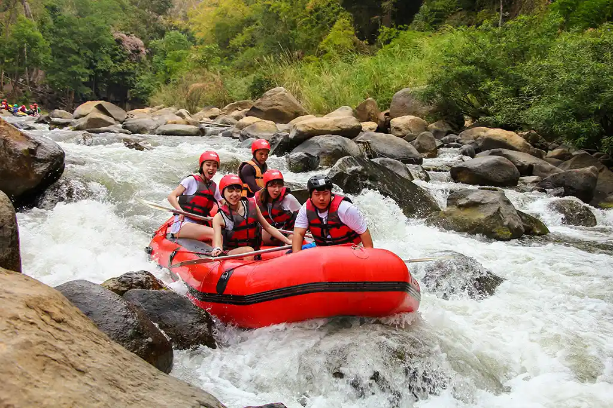
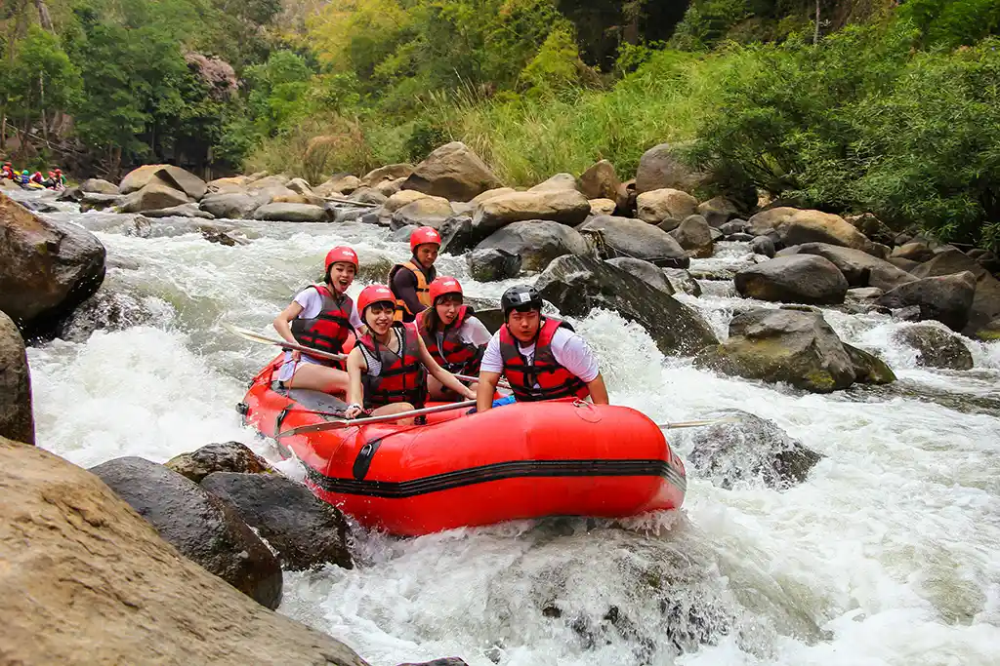

"To unlock the transformative power of wild rivers—where fear becomes courage, strangers become crew, and ordinary days become legendary stories."

"To unlock the transformative power of wild rivers—where fear becomes courage, strangers become crew, and ordinary days become legendary stories."
Founded in 2008 by river guide Jake Morrison after a wild ride through "Devil's Horn" rapid, Down the River began with one raft and a mission: to make whitewater adventures safe, fun, and unforgettable for everyone. From our first family trip to today's 15,000+ thrill-seekers guided, we've stayed true to our roots—expert-led, safety-focused, and always stoked. Still owned by Jake. Still flipping rafts (just for fun now).

 
